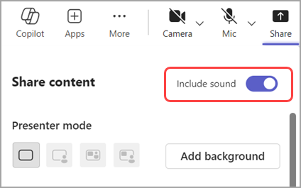

MEETING SETUP
Stagelight
with Microsoft Teams.
Give your Teams meeting a countdown with music.
Which app do I need?
Stagelight is a website. There is no Stagelight download to install. “Downloaded app” below means your meeting app.
The downloaded Teams app runs on Windows or Mac. Stagelight runs separately in your browser. Follow the numbered steps below.

Before you share
Use headphones. Close other noisy tabs. Try a music preview first. Share only the window or tab you want attendees to see.
Computer: downloaded app
Prepare Stagelight
Open Stagelight in a separate browser window. Choose your songs, title, and countdown. Turn off Full screen if you want the Teams controls nearby.
Choose what to share
Join your Teams meeting and select Share. Choose the Stagelight window, or the screen containing it.
Include the sound
Turn on Include sound in the sharing controls. If sharing already started, look for Share audio in the sharing toolbar.
Begin and check
In Stagelight, click Begin presentation. Ask another attendee to confirm both the screen and music.
Hand over to the meeting
Stop Stagelight playback, then stop sharing in Teams before returning to your setup.
NO MEETING APP DOWNLOAD
Computer browser
In Teams for web, choose Share → Screen, window, or tab. Select the Stagelight tab and enable Also share tab audio. Window or screen sharing may offer system audio instead.
DOWNLOADED MEETING APP + STAGELIGHT IN YOUR BROWSER
Phone or tablet
Android
In the Teams mobile meeting, tap Share → Share screen → Share screen with audio. Accept the device prompt, then switch to Stagelight in your browser. Return to Teams to stop presenting.
iPhone & iPad
In the Teams mobile meeting, choose Share → Share screen → Share screen with audio → Start Broadcast. Switch to Stagelight in Safari. Return to Teams to stop the broadcast.
Test on your device first
These are the meeting provider’s sharing steps. Stagelight playback while switching between mobile apps is not verified. Your phone may pause music or limit screen audio. If that happens, present from a computer.
Mobile sharing can expose your whole screen and notifications. Enable Do Not Disturb and stop sharing before opening anything private.
Based on Microsoft Teams sharing documentation ↗. Button names can vary by version and device.
No sound in the meeting?
If sound is missing, check Include sound or Share audio. Confirm the music plays locally. Your Teams app, device, or organization may limit audio sharing.
Use the Teams desktop app for this walkthrough. On a Mac, Teams may prompt for an audio component or recording permission; finish its setup before your event.
Hearing music locally does not prove the meeting hears it. Ask an attendee before people arrive.
Need another hand?
Find audio fixes or tell us what went wrong.